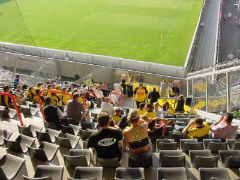
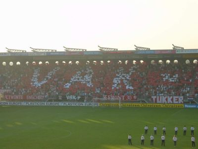
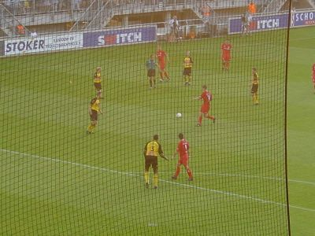
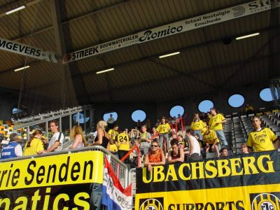

|
FC Twente - Roda JC 3-0 25 augustus 2001 |

150 Roda-supporters maakten de trip naar Enschede.

De choreografie van "vak P".

Hier bleef het net hangen.

De Gerrie Senden Fanatics met hun nieuwe spandoek hadden
dubbele pech: Ger werd niet opgesteld en Roda verloor met
3-0.
©KPD